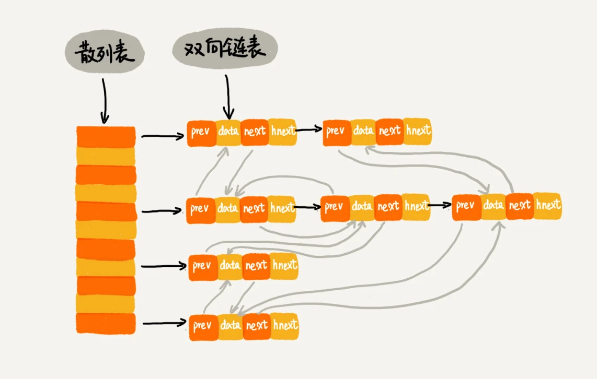

接着学散列表（下）。这一节主要介绍散列表和链表是如何组合起来使用的，以及为什么散列表和链表会经常放到一块使用。
LRU缓存淘汰算法
回顾如何通过链表实现LRU缓存淘汰算法。首先需要维护一个按照访问时间从大到小有序排列的链表结构。因为缓存大小有限，当缓存空间不够时，需要淘汰一个数据的时候，就直接将链表头部的结点删除（这里按照访问时间从大到小的意思是：头结点是最早访问的，尾结点是最新访问的）。当要缓存某个数据时，先在链表中查找这个数据。如果没有找到，则直接将数据放到链表的尾部；如果找到了，就把它移动到链表的尾部。因为查找数据需要遍历链表，所以单纯用链表实现的LRU缓存淘汰算法的时间复杂度是\(O(n)\)。
实际上，一个缓存系统主要包含这几个操作：
- 往缓存里添加一个数据
- 从缓存里删除一个数据
- 在缓存里查找一个数据
如果将散列表和链表两种数据结构组合使用，可以将时间复杂度都降低到\(O(1)\)。

这张图通过网友评论，理解了半天，先放原评论，目前第一排第一个是头结点，第一排第二个是尾结点。当要删除结点时，按序从头删即可，当尾结点要添加新节点，或者将已有结点移动到尾结点，只要计算出该节点的散列值，然后放到对应散列行的最后，并和上一个尾结点（即目前的第一排第二个）进行双向连接即可，自己一开始不能理解的是，为什么双向链表是这样连接起来的？其实应该是这样的，（不考虑删除元素，只考虑添加元素）第一次通过散列函数计算添加了第一槽里的第一个元素，然后第二次通过散列函数计算添加了第二槽里第一个元素，第三次通过散列函数计算发现和第二槽里的元素，发生了散列冲突，通过双向链表将两个元素连接起来，依次类推理解。另一位网友评论总结实在是太好了，1)双向链表中的prev和next指针是示意图中的纵向指针，hnext是横向指针。2)hnext维护的是散列表中同一槽位的单链表（即连接hash值相同的结点）3)一个散列表搭档一个双向链表。散列表中同一槽位的结点通过hnext指针连接，也就是同意槽位上的单链表。双向链表维护的是时间线，节点的淘汰和增加就在双向链表中进行。散列表和链表两种数据结构组合使用既解决了链表查询时间复杂度高的问题，又不需要像数组在空间不足时需要动态扩容。
时间复杂度
查找数据。散列表中查找数据的时间复杂度为\(O(1)\)（如果装载因子比较大的时候，发生散列冲突。如果链表结点个数少于8时，时间复杂度为\(O(1)\)，否则时间复杂度可能为\(O(logn)\)）。当找到数据之后，需要把它移动到双向链表的尾部（移动到双向链表的尾部之后，结点在哈希表中的位置并不会改变。hnext指针没有改变，只改变next指针）。
删除数据。首先找到数据所在的结点，然后将结点删除。借住散列表，可以在\(O(1)\)时间复杂度里找到要删除的结点。同时，双向链表可以通过前驱指针\(O(1)\)时间复杂度获取前驱结点，所以在双向链表中，删除结点只需要\(O(1)\)的时间复杂度（这里应该还需要删除拉链中的结点，时间复杂度应该也考虑到）。
添加数据。首先查看这个数据是否已经在缓存中。如果在，需要将其移动到双向链表的尾部；如果不在其中，还要看缓存有没有满。如果满了，则将双向链表头部的结点删除，然后再将数据放到链表的尾部；如果没有满，就直接将数据放到链表的尾部。整个过程涉及的查找操作都可以通过散列表来完成。其他的操作，比如删除头结点，链表尾部插入数据等，都可以在\(O(1)\)时间复杂度内完成。
所以，这三个操作的时间复杂度都是\(O(1)\)。
Redis 有序集合
在有序集合中，每个成员对象有两个重要的属性，key（键值）和score（分值）。不仅会通过score来查找数据，还会通过key来查找数据。
举例说明，比如用户积分榜有这样一个功能：可以通过用户的ID来查找积分信息，也可以通过积分区间来查找用户ID或者姓名信息。这里包含ID、姓名和积分的用户信息，就是成员对象，用户ID就是key，积分就是score。
细化一下Redis有序集合的操作：
- 添加一个成员对象
- 按照键值来删除一个成员对象
- 按照键值来查找一个成员对象
- 按照分值区间查找数据，比如查找积分在
[100, 356]之间的成员对象 - 按照分值从小到大排序成员变量
如果仅仅按照分值将成员对象组织成跳表（要求有序）的结构，那按照键值来删除、查询成员对象就会很慢，解决方法与LRU缓存淘汰算法的解决方法类似。可以按照键值构建一个散列表，这样按照key来删除、查找一个成员对象的时间复杂度就变成了\(O(1)\)。
Java LinkedHashMap
LinkedHashMap也是通过散列表和链表组合在一起的。
它支持按照插入顺序遍历数据，
1 | HashMap<Integer, Integer> m = new LinkedHashMap<>(); |
还支持按照访问顺序来遍历数据。
1 | // 10是初始大小，0.75是装载因子，true是表示按照访问时间排序 |
其实按照访问时间排序的LinkedHashMap本身就是一个支持LRU缓存淘汰策略的缓存系统。
LinkedHashMap是通过双向链表和散列表这两种数据结构组合实现的。LinkedHashMap中的“Linked”实际上指的是双向链表，并非只用链表法解决散列冲突。
解答开篇
为什么散列表和链表经常一块使用？
散列表这种数据结构虽然支持非常高效的数据插入、删除、查找操作，但是散列表中的数据都是通过散列函数打乱之后无规律存储的。也就是说，它无法支持按照某种顺序快速地遍历数据。如果希望按照顺序遍历散列表中的数据，那需要将散列表中的数据拷贝到数据中，然后排序，再遍历。
因为散列表是动态数据结构，不停地有数据的插入、删除，所以每当希望按照顺序遍历散列表中的数据的时候，都需要先排序，那效率势必会很低。为了解决这个问题，将散列表和链表（或者跳表）结合在一起使用。
课后思考
如果把例子中的双向链表改成单链表，还能否正常工作呢？
删除一个元素时，虽然能\(O(1)\)时间复杂度找到目标结点，但是要删除该结点需要拿到前一个结点的指针，遍历到前一个结点时间复杂度会变成\(O(n)\)，所以使用双向链表实现比较合适。
假设猎聘网有10万名猎头，每个猎头都可以通过做任务（比如发布职位）来积累积分，然后通过积分来下载简历。那么问题是如果在内存里存储这10万个猎头的
ID和积分信息，让它能够支持这样几个操作：- 根据猎头的
ID快速查找、删除、更新这个猎头的积分信息 - 查找积分在某个区间的猎头
ID列表 - 查找按照积分从小到大排名在第
x位到第y位之间的猎头ID列表
这个问题跟
Redis有序集合中举的例子很像。1）ID在散列表中所以可以\(O(1)\)查找。2）积分以跳表存储，跳表支持区间查询。3）这点根据目前的学习暂时无法实现。- 根据猎头的